DeepCurrents: Learning Implicit Representations of Shapes with Boundaries
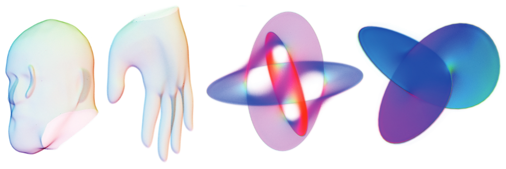
Abstract
Recent techniques have been successful in reconstructing surfaces as level sets of learned functions (such as signed distance fields) parameterized by deep neural networks. Many of these methods, however, learn only closed surfaces and are unable to reconstruct shapes with boundary curves. We propose a hybrid shape representation that combines explicit boundary curves with implicit learned interiors. Using machinery from geometric measure theory, we parameterize currents using deep networks and use stochastic gradient descent to solve a minimal surface problem. By modifying the metric according to target geometry coming, e.g., from a mesh or point cloud, we can use this approach to represent arbitrary surfaces, learning implicitly defined shapes with explicitly defined boundary curves. We further demonstrate learning families of shapes jointly parameterized by boundary curves and latent codes.
Method
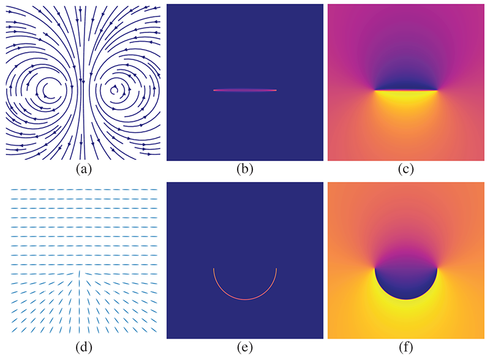
We learn a geometric current parameterized by a deep network \(f\). Minimizing the mass norm \(\|df + \alpha\|_1\) under the Euclidean metric in two dimensions yields a line segment connecting the two boundary points (b). With our custom data-dependent background metric, we can reconstruct the semicircle as a current (e). \(\alpha\) is shown as a vector field (a) and the custom metric is depicted by oriented ellipsoids (d, not to scale). Corresponding functions \(f\) are shown on the right (c and f).
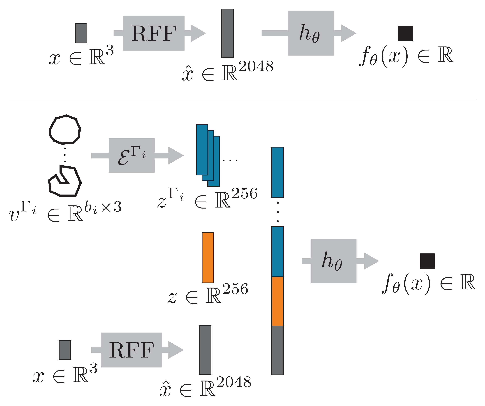
An overview of our network architectures for minimal surface optimization and single surface reconstruction (top) as well as shape space learning (bottom). An input point \(x\) is first encoded using random Fourier features. These features are then optionally concatenated with latent codes corresponding to shape identity and boundary and finally decoded to a scalar output.
Results
Minimal Surface Convergence
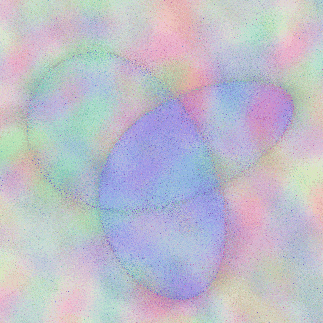
Trefoil Knot
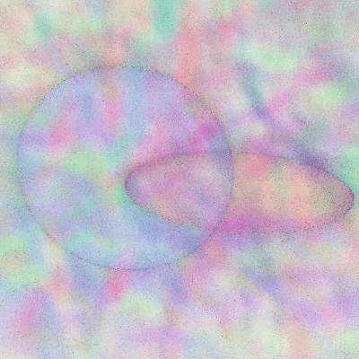
Hopf Link
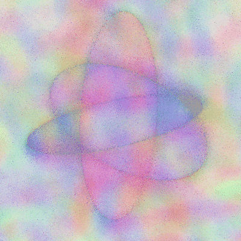
Borromean Rings
Learned Surface Interpolation
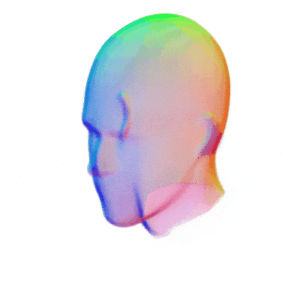
Heads (latent)
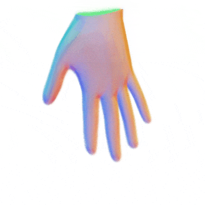
Hands (latent)
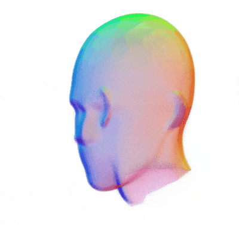
Heads (boundary)
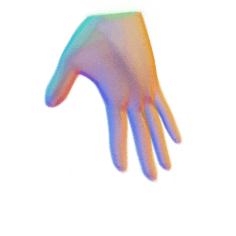
Hands (boundary)
Surface Reconstruction
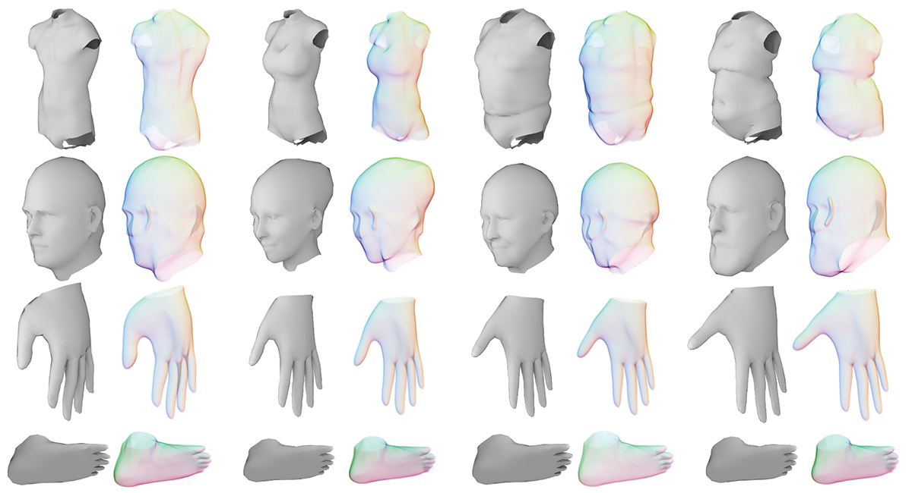
Video
Paper
D. Palmer*, D. Smirnov*, S. Wang, A. Chern, J. Solomon
DeepCurrents: Learning Implicit Representations of Shapes with Boundaries
Conference on Computer Vision and Pattern Recognition (CVPR), 2022
arXiv | BibTeX
@inproceedings{palmer2022deepcurrents,
title={{DeepCurrents}: Learning Implicit Representations of Shapes with Boundaries},
author={Palmer, David and Smirnov, Dmitriy and Wang, Stephanie and Chern, Albert and Solomon, Justin},
year={2022},
booktitle={Proceedings of the IEEE/CVF Conference on Computer Vision and Pattern Recognition (CVPR)}
}